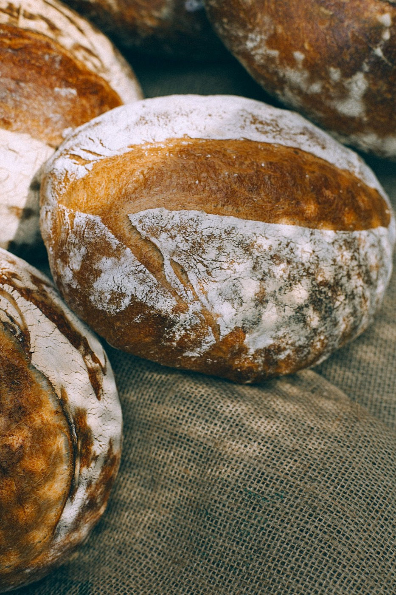
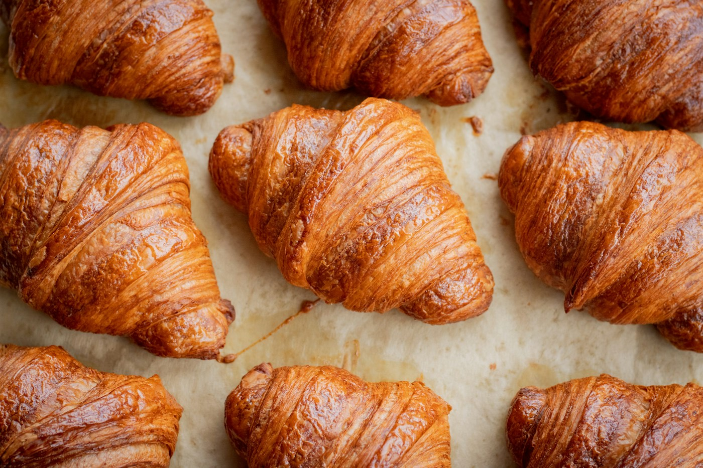
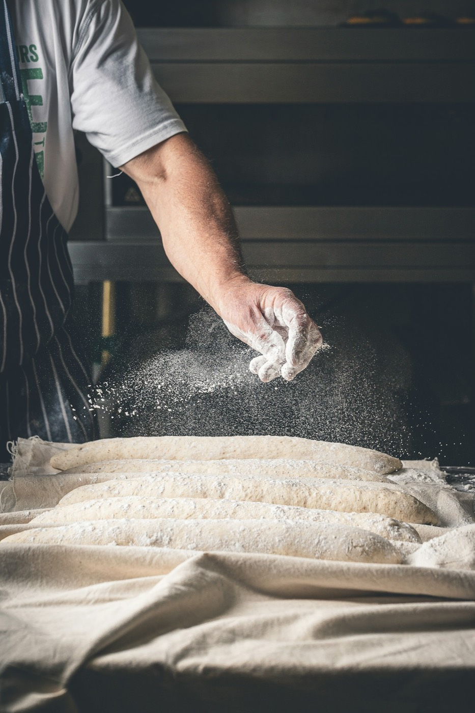
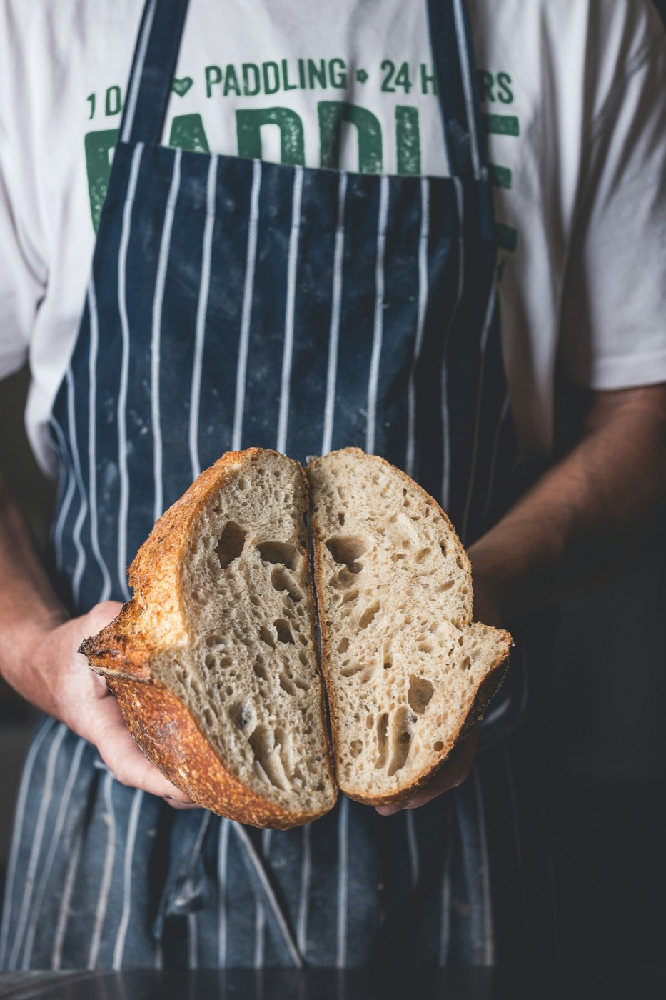
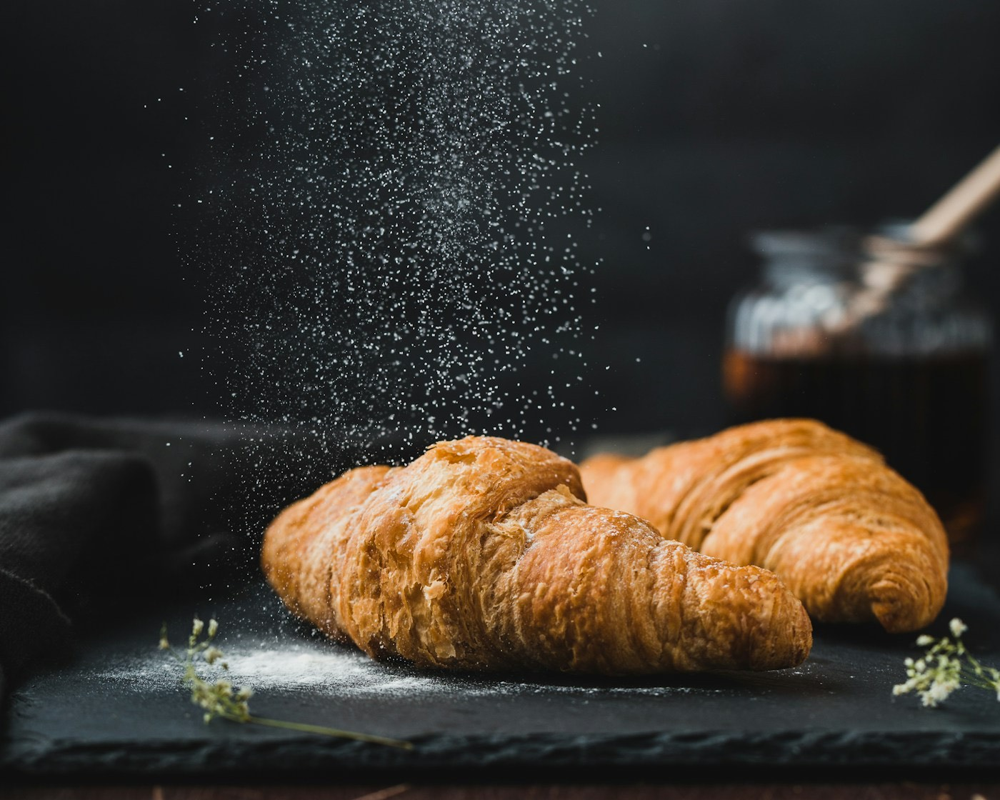

Le pain d'abord. Le reste, avec patience.
Boulangerie-pâtisserie artisanale dans un quartier de Rennes. Chaque nuit le levain travaille, chaque matin le four à sole s'allume avant l'aube.
Horaires en cours de chargement…


Les fournées du moment
Ce que le fournil sort cette semaine, au gré des saisons et de l'humeur du levain.

Farine, eau, sel, levain. Et le temps qu'il faut.
- Levain maison
- Pétri sur place
- Four à sole
- Farines locales
Rien de plus dans la recette. Pas de raccourci non plus : nos pâtes reposent de 18 à 24 heures.


Trois générations, un seul fournil
Depuis 1987, la maison se transmet un levain, une façon de faire et l'habitude de dire bonjour à chacun.
Marie-Jo et Armel (personnages imaginaires) ont ouvert la boutique avec un four d'occasion et beaucoup d'entêtement. Aujourd'hui, la deuxième génération a repris les pétrins sans toucher à la recette.
Ce que pourraient dire vos clients
Avis d'exemple, écrits pour montrer la mise en page.
-
« La baguette croustille encore à l'heure du goûter. »
-
« Le kouign-amann, on le garde pour le dimanche. Enfin, on essaie. »
-
« Un accueil souriant, même quand la file sort sur le trottoir. »
Passez nous voir
12 rue de la Mie-Dorée, 35000 Rennes(adresse fictive)
Téléphone : 02 00 00 00 00 (numéro fictif)